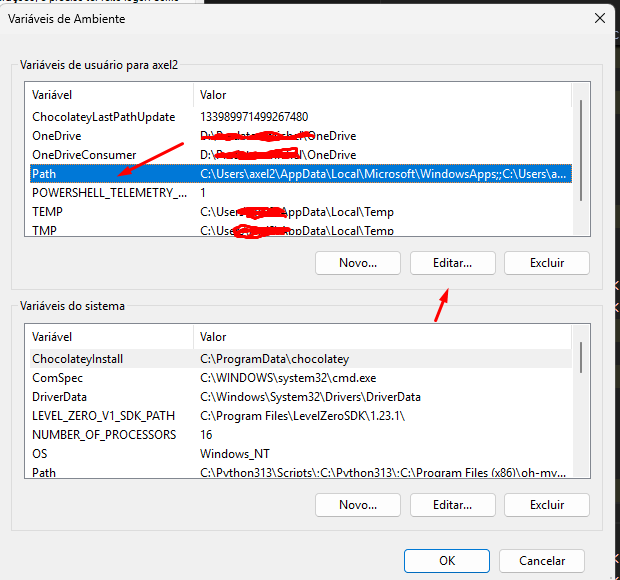

Por que adicionar uma pasta ao PATH?
A variável de ambiente PATH é uma lista de diretórios que o Windows verifica sempre que você digita um comando em um terminal (como PowerShell ou Prompt de Comando). Ao adicionar a pasta de um programa (por exemplo, D:\Caminho\Para\MeuApp) ao PATH, você pode executar esse programa digitando apenas o nome dele (MeuApp.exe), sem precisar navegar até a pasta dele primeiro.
Método 1: Usando a Interface Gráfica (Recomendado)
Este é o método mais visual e seguro para a maioria dos usuários.
-
Abrir as Propriedades do Sistema:
Pressione as teclas Windows + R para abrir a caixa "Executar". Digite
sysdm.cple pressione Enter. -
Acessar as Variáveis de Ambiente:
Na janela "Propriedades do Sistema", vá para a aba Avançado e clique no botão Variáveis de Ambiente....
-
Editar a Variável Path:
Na seção superior ("Variáveis de usuário"), selecione a linha que contém Path e clique em Editar.... Isso garante que a alteração afete apenas o seu perfil de usuário.
 -
Adicionar o Novo Caminho:
Clique em Novo e cole o caminho desejado (ex:
D:\Predator\OneDrive\Aplicativos\WhoIs). Pressione Enter para confirmar a nova linha. -
Confirmar Todas as Alterações:
Clique em OK em todas as janelas abertas para salvar as mudanças.
-
Verificar o Resultado:
Importante: Feche qualquer terminal que esteja aberto e abra um novo. Agora, digite o nome do executável (ex:
whois.exe) e pressione Enter. Ele deve ser encontrado!
Método 2: Usando o PowerShell (Avançado)
Este método é mais rápido para quem já está familiarizado com a linha de comando.
-
Abra o PowerShell:
Clique no menu Iniciar, digite "PowerShell" e abra o aplicativo. Não precisa ser como Administrador.
-
Execute o Script:
Copie o bloco de código abaixo, cole no PowerShell e pressione Enter. Ele adiciona o caminho ao PATH do seu usuário de forma segura, sem apagar os caminhos existentes.
# 1. Especifique o caminho da sua pasta aqui $caminhoAdicionar = "D:\Caminho\OneDrive\Aplicativos\WhoIs" # 2. Busca o PATH atual do usuário $pathAtual = [System.Environment]::GetEnvironmentVariable("Path", "User") # 3. Adiciona o novo caminho (apenas se ele já não existir) if (-not ($pathAtual -split ';').Contains($caminhoAdicionar)) { $novoPath = $pathAtual + ";" + $caminhoAdicionar [System.Environment]::SetEnvironmentVariable("Path", $novoPath, "User") Write-Host "Sucesso: O caminho foi adicionado ao seu PATH." -ForegroundColor Green } else { Write-Host "Info: O caminho já existe no seu PATH." -ForegroundColor Yellow } Write-Host "Por favor, reinicie seu terminal para aplicar as mudanças." -
Reinicie o Terminal:
Assim como no método anterior, feche e abra uma nova janela do PowerShell para que as alterações tenham efeito.